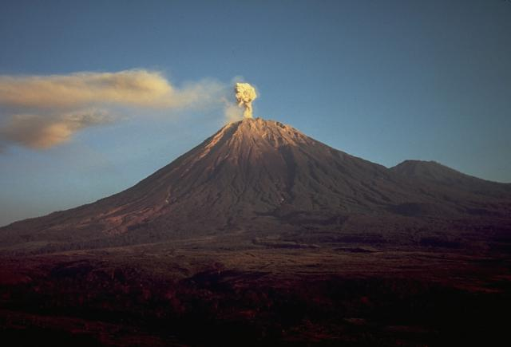

Tentang Kami

Gunung Semeru atau Gunung Meru adalah sebuah gunung berapi kerucut di Jawa Timur, Indonesia. Gunung Semeru merupakan gunung tertinggi di Pulau Jawa, dengan puncaknya Mahameru, 3.744 meter[1] dari permukaan laut (mdpl). Gunung
ini terbentuk akibat subduksi Lempeng Indo-Australia kebawah Lempeng Eurasia. Gunung Semeru juga merupakan gunung berapi tertinggi ketiga di Indonesia setelah Gunung Kerinci di Sumatra dan Gunung Rinjani di Nusa Tenggara
Barat.[2] Kawah di puncak Gunung Semeru dikenal dengan nama Jonggring Saloko.
Gunung Semeru secara administratif termasuk dalam wilayah dua kabupaten, yakni Kabupaten Malang dan Kabupaten Lumajang, Provinsi Jawa Timur. Gunung ini termasuk dalam kawasan Taman Nasional Bromo Tengger Semeru. Semeru mempunyai
kawasan hutan Dipterokarp Bukit, hutan Dipterokarp Atas, hutan Montane, dan Hutan Ericaceous atau hutan gunung. Posisi geografis Semeru terletak antara 8°06' LS dan 112°55' BT.
Pada tahun 1913 dan 1946 Kawah Jonggring Saloka memiliki kubah dengan ketinggian 3.744,8 m hingga akhir November 1973. Di sebelah selatan, kubah ini mendobrak tepi kawah menyebabkan aliran lava mengarah ke sisi selatan meliputi
daerah Pronojiwo dan Candipuro di Lumajang.
Sejarah
Pendaki Pertama
Orang Eropa pertama yang mendaki gunung ini adalah Clignet dan Winny Brigita (1838), seorang ahli geologi berkebangsaan Belanda. Mereka menempuh jalur dari sebelah barat daya melalui Widodaren. Selanjutnya Junghuhn (1945),
seorang ahli botani berkebangsaan Belanda, mendaki dari utara lewat gunung Ayek-ayek, gunung Inder-inder dan gunung Kepolo. Pada tahun 1911, Van Gogh dan Heim melalui lereng utara dan setelah 1945 umumnya pendakian dilakukan
lewat lereng utara melalui Ranu Pani dan Ranu Kumbolo hingga saat ini.[butuh rujukan]
Legenda Gunung Semeru
Menurut kepercayaan masyarakat Jawa yang ditulis pada kitab kuno Tantu Pagelaran yang berasal dari abad ke-15, pada dahulu kala Pulau Jawa mengambang di lautan luas, terombang-ambing dan senantiasa berguncang. Para Dewa
memutuskan untuk memakukan Pulau Jawa dengan cara memindahkan Gunung Meru di India ke atas Pulau Jawa.
Iklim
Secara umum iklim di wilayah Gunung Semeru termasuk type iklim B (Schmidt dan Ferguson) dengan curah hujan 927 mm - 5.498 mm per tahun dengan jumlah hari hujan 136 hari/tahun dan musim hujan jatuh pada bulan November - April.
Suhu udara dipuncak Semeru berkisar antara 0 - 4 derajat celsius.
Suhu rata-rata berkisar antara 3 °C - 8 °C pada malam dan dini hari, sedangkan pada siang hari berkisar antara 15 °C - 21 °C. Kadang-kadang pada beberapa daerah terjadi hujan salju kecil pada saat perubahan musim hujan ke musim
kemarau atau sebaliknya. Suhu yang dingin di sepanjang rute perjalanan ini bukan semata-mata disebabkan oleh udara diam, namun juga didukung oleh kencangnya angin yang berhembus ke daerah ini menyebabkan udara semakin dingin.
Taman Nasional
Gunung ini masuk dalam kawasan Taman Nasional Bromo Tengger Semeru. Taman Nasional ini terdiri dari pegunungan dan lembah seluas 50.273,3 hektar. Terdapat beberapa gunung di dalam Kaldera Gunung Tengger antara lain: Gunung Bromo
(2.392 m); Gunung Batok (2.470 m); Gunung Kursi (2.581 m); Gunung Watangan (2.662 m); dan Gunung Widodaren (2.650m). Terdapat empat buah danau (ranu): Ranu Pani, Ranu Regulo, Ranu Kumbolo dan Ranu Darungan.
Flora yang berada di wilayah Gunung Semeru beraneka ragam jenisnya tetapi banyak didominir oleh pohon cemara, akasia, pinus, dan jenis Jamuju. Sedangkan untuk tumbuhan bawah didominasi oleh kirinyuh, alang-alang, tembelekan,
harendong dan edelwiss putih. Edelwis juga banyak ditemukan di lereng-lereng menuju puncak Semeru. Terdapat pula spesies bunga anggrek endemik yang hidup di sekitar Gunung Semeru bagian selatan yakni Anggrek selop.
Banyak fauna yang menghuni gunung Semeru antara lain: macan kumbang, budeng, luwak, kijang, kancil, dll. Sedangkan di Ranu Kumbolo terdapat belibis yang masih hidup liar.